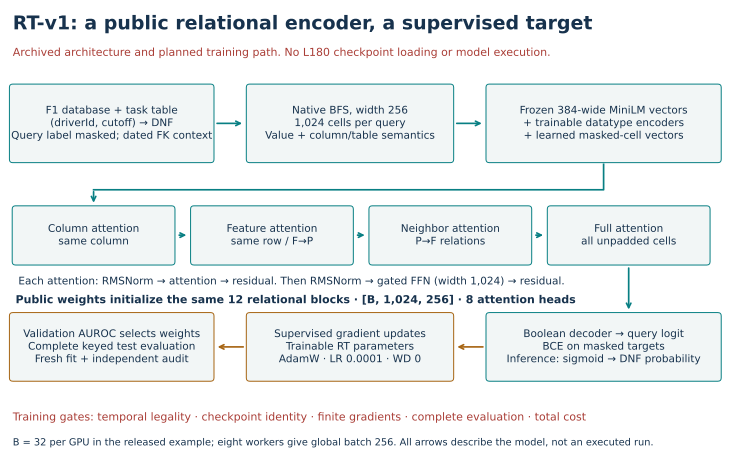
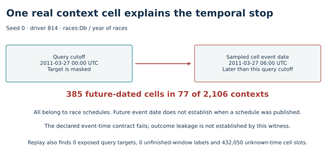
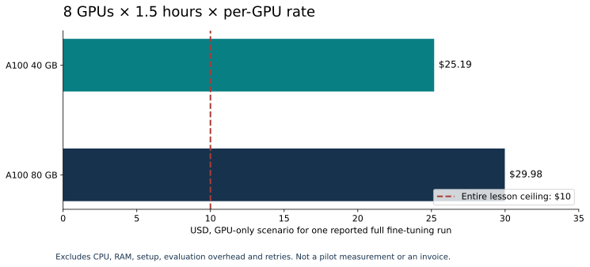

Year 5 · Quarter 2 · Checkpoint 180
Fine-tune a public encoder on one database
Your win: explain exactly what evidence would let you claim, “I fine-tuned a public relational encoder on one database.” Complete the three notebook contracts and defend the observed verdict. Read the core path in about 15 minutes; use a separate session for the lab.
Observed: complete saved-context replay; public RT-v1 fine-tuning NOT_RUN; practical Q2 exit INCOMPLETE. The temporal gate fails and one reported full run exceeds the $10 ceiling. No new inference, training or cloud/API spend. Learner defense: PENDING_WRITTEN_DEFENSE.
Student notebook · Executed solution · Solution notebook · Quick reference · Reproduction protocol.
1 · What remains after the previous lessons?¶
Lesson 173 trained a small course encoder. Lesson 174 compared adaptation policies on that encoder. Those runs teach parameter updates, but do not demonstrate loading and fine-tuning an externally released relational model. Lesson 175 attempted public RT-v1 evaluation and stopped at a temporal gate. Lesson 177 distinguished full costs from inner timers; Lesson 178 showed why a finite forward pass does not prove finite gradients.
The checkpoint joins these ideas: public initialization → legal task inputs → actual updates → validation selection → independently checked predictions. A failure anywhere prevents the practical exit. Lesson 179 is not yet present in this checkout; the retrieval below revisits the relevant failure concepts without assuming it was completed. This advances our mission of making relational-model claims that can survive scrutiny.
2 · Name the model before naming the result¶
Our selected target is RT-v1 supervised fine-tuning on rel-f1/driver-dnf, using pretrain_rel-f1_driver-dnf.pt. The release describes this initialization as pretrained with F1 held out. That is release provenance; reproducing the entire pretraining lineage is a different claim. The later finetune-from-contd-pretrain checkpoint already has target supervision and is not a fresh initialization for this experiment. Pinned release card
We pin the repository revision and filename, but have not downloaded or authenticated the weight bytes. A public download link does not equal a loaded model. The course encoder from L174 is also not a substitute for these weights.
Model architecture · what would receive gradients?¶
Recall before tracing. An encoder maps input cells to numerical representations; a decoder maps the final query representation to a prediction. A logit is an unconstrained class score, converted to a probability by sigmoid. Binary cross-entropy penalizes assigning low probability to the correct binary answer. Gradients describe how weights affect that loss; AdamW uses those gradients to update the trainable weights. The frozen MiniLM text encoder supplies name representations and receives no such update.
A query is a driver and cutoff. The target asks whether a result in (cutoff, cutoff + 30 days] has statusId != 1; raw-label reconstruction retains the benchmark cohort, which requires future participation. This is not a prospective evaluation of every driver. Mask the query target, sample linked cells, and encode datatype values plus table/column semantics. The frozen MiniLM vectors are inputs; RT's value projections, attention blocks and decoder are trainable. Original task SQL, RT §3.


Trace one update: masked DNF cell → boolean logit → binary cross-entropy → backward gradients through the decoder and relational blocks → AdamW update. The source averages loss over masked cells. The four attention relations run sequentially inside each block; they are not four independent models. A frozen-checkpoint prediction traverses the forward path but does not take this update. The exact original model and trainer are visible in the notebook appendix.
3 · A faithfully replayed failure is useful evidence¶
The lab authenticates all three saved sampler runs from L175: 2,106 contexts, 2,156,544 cell slots, and all 702 unique (driverId, cutoff) keys per seed. It reconstructs each query label from 26,080 raw results. It does not sample fresh contexts or execute a model.


The 385 future-dated cells occur in 77 contexts and belong to race schedules. A schedule can be published before its event date, but arrival histories are absent here. Therefore the declared event-time rule fails, while outcome leakage remains unestablished. The same scan finds zero unmasked query targets and zero labels whose 30-day outcome window is unfinished. Those passes do not cancel the failed rule. The 432,050 unknown-time cell slots also do not prove historical availability.
Your first live function: count future-dated cells, exposed targets, unfinished-window labels and unknown timestamps. An unknown timestamp is not silently treated as “safe.” The notebook checks your function against every saved context and rejects a function that always returns zero.
4 · Full reproduction has an exact schedule and a full bill¶
The paper reports about 33,000 fine-tuning steps, global batch 256, context 1,024, AdamW learning rate 1e-4, and zero weight decay. The released example spells the step limit as 2**15 + 1 = 32,769 and uses batch 32 per GPU on eight GPUs. Record the rounded-paper versus exact-source distinction. Paper §4.1, Pinned source example.
| Source example behavior | Meaning for this F1 reproduction |
|---|---|
| Example task is Amazon churn | F1 task and public initialization must be explicitly configured |
save_ckpt_dir=None |
Running unchanged does not retain selected weights |
| Compare higher validation AUROC | Test scores do not choose the checkpoint |
| Evaluate validation and test during training | Must document test visibility; logging alone is not test selection |
max_eval_steps=40 |
Verify actual per-rank population coverage and complete keys |
RT_SAVE_ALL_STEPS is optional |
Preserve enough states and metrics to independently verify selection |
These are source observations, not executed guarantees. F1 training gradients, loaded weights and full train/validation/test coverage remain unchecked. The L178 gradient failure belongs to RelGNN's numerical encoder; it is not evidence that RT's gradients fail.
Worked cost: eight GPUs × 1.5 hours × 3,600 seconds/hour × $0.000583/GPU-second = **$25.185600**, GPU-only. A100 80 GB gives $29.980800**. CPU, RAM, setup, evaluation overhead and retries add to this. Both scenarios already exceed the **$10 total lesson cap. These are calculations from reported runtime and pinned pricing, not measured pilot timings or invoices.


Your second live function: compute the complete run's price with decimal arithmetic. Omitting the GPU count yields $3.1482 and admits an unaffordable plan. Replaying old weights or silently cutting the steps would answer a different question. Our authorized work costs **$0 new cloud/API**, with a 1,800-second aggregate local numerical cutoff including failures and verification.
5 · The checkpoint is a conjunction of evidence¶
Your third live function: retain every blocker, then distinguish admission from completed execution and reviewed learner work. Removing only the budget blocker must leave the temporal blocker visible. An affordable GPU subtotal is insufficient: an explicit all-in upper bound must also fit the cap. The actual all-in bound remains unknown. Even when every prerequisite is hypothetically passed, a run that has not happened cannot pass the practical exit.
def checkpoint_decision(evidence):
"""Retain all failed prerequisites; hypothetical admission cannot award mastery."""
from decimal import Decimal,InvalidOperation
blockers=[]
for field in ['temporal','training_health','checkpoint_bytes','selection','full_population','source_protocol']:
if evidence.get(field)!='PASS':blockers.append(field.upper())
try:
cost=Decimal(str(evidence.get('gpu_only_usd')));cap=Decimal(str(evidence.get('cap_usd')))
if not cost.is_finite() or not cap.is_finite() or cost<0 or cap<=0:raise ValueError()
if cost>cap:blockers.append('BUDGET')
except (InvalidOperation,ValueError):blockers.append('BUDGET_UNKNOWN')
try:
total=Decimal(str(evidence.get('all_in_upper_usd')))
if not total.is_finite() or total<0:raise ValueError()
if 'BUDGET_UNKNOWN' not in blockers:
if total<cost:blockers.append('ALL_IN_COST_INVALID')
elif total>cap and 'BUDGET' not in blockers:blockers.append('BUDGET')
except (InvalidOperation,ValueError):blockers.append('ALL_IN_COST_UNKNOWN')
admission='BLOCKED' if blockers else 'READY_FOR_SEPARATELY_AUTHORIZED_RUN'
practical='INCOMPLETE'
if not blockers and evidence.get('fresh_fit')=='VERIFIED':
practical='PASS' if evidence.get('written_defense')=='PASS' else 'PENDING_WRITTEN_DEFENSE'
return dict(admission=admission,blockers=blockers,practical_exit=practical)
The explorer treats the other prerequisites as a bundle to keep the decision readable. In the notebook they remain six separate fields: temporal audit, training health, weight-byte identity, selection, full population, and source/protocol agreement. The approved entry point recomputes the actual evidence and exits before any download or dispatch:
.venv/bin/python labs/_budget_l180.py .venv/bin/python labs/_run_l180.py
# Expected: BLOCKED, exit code 2; fresh fine-tuning NOT_RUN.
This executable admission lane and archived trainer are not a validated post-gate training system. A future run needs a separately approved temporal policy, authenticated weights, finite-gradient probe, complete selection/evaluation protocol and all-in cost. No repaired sampler or shorter schedule has been substituted here.
6 · Exit: defend the claim you can make¶
- Implement the three live notebook functions and run the complete saved-context audit. Explain why correct replay can reproduce a failed scientific gate.
- Name the initialization, trainable parameters, exact schedule, information-access policy and validation selection rule. Distinguish source inspection from executed verification.
- State the observed blockers and next required evidence. Defend the schedule-date witness without turning missing availability history into proof of leakage.
- Keep the practical exit
INCOMPLETEuntil a public-encoder fit is executed and independently verified. Your explanation remainsPENDING_WRITTEN_DEFENSEuntil reviewed. Author checks cannot award either.
Primary reading: RT-v1 §4.1 and Appendix D, alongside the pinned training example. Inspect both before proposing a run. Ask the teaching agent about any unclear step, or submit your notebook defense for feedback. Tomorrow, retrieve the distinction between replay, fresh fitting and historical identity without reopening this page.
Course sequence · Full measured report · Input hashes · Source ledger.